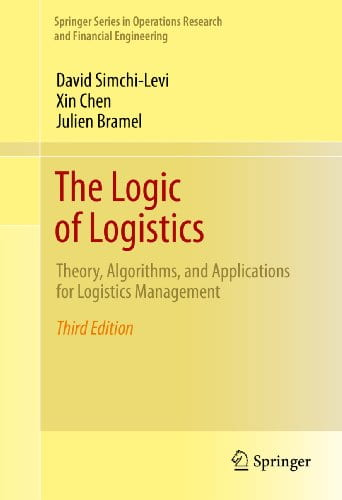

Optimization &
mathematical structure
Convexity, discrete convex analysis, stochastic optimization and the structure of complex decision problems.
Charles and Nancy Davidson Distinguished Chair
Professor of Operations Management
Naveen Jindal School of Management
The University of Texas at Dallas
Mathematical structure for decisions under uncertainty. My research connects optimization, stochastic control and learning with inventory, pricing and supply chain management.
I study the mathematical foundations of decision-making and their applications in operations. My work spans revenue management and dynamic pricing, inventory and supply chain management, optimization, optimal stochastic control, machine learning and data analytics.
I joined UT Dallas in September 2026, following appointments at Georgia Tech and the University of Illinois. My recognition includes the INFORMS MSOM Society Best Associate Editor in Operations Research award (2024), the University of Illinois Engineering Council Outstanding Advisor Award (2021), and the INFORMS Revenue Management and Pricing Section Prize (2009). I am a coauthor of The Logic of Logistics.
Convexity, discrete convex analysis, stochastic optimization and the structure of complex decision problems.
Dynamic pricing, revenue management, sourcing and inventory policies in uncertain operating environments.
Policy optimization, Markov decision processes and data-driven methods for sequential decisions.
Xin Chen, Jiameng Lyu, Shilin Yuan and Yuan Zhou
Shuai Li, Zikun Ye, Xin Chen and Weijun Xie
Xin Chen and Minda Zhao

David Simchi-Levi, Xin Chen and Julien Bramel
Springer · Third edition, 2014 · Second edition, 2005
A survey of mathematical models and algorithms for logistics and supply chain management.
View the book at Springer ↗